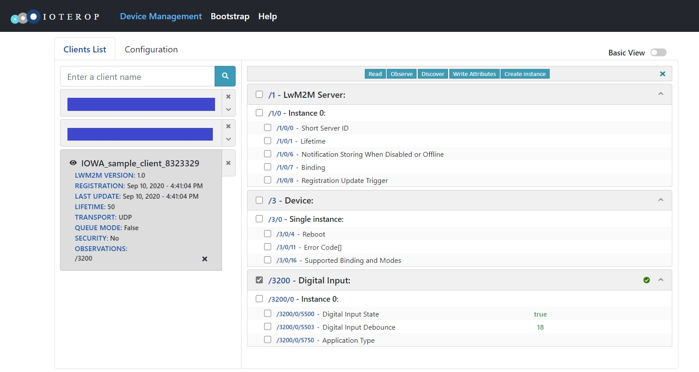

Dynamic Custom Object
This is the Custom Object Baseline Client with dynamic Resource values. The Client still features the same custom LwM2M Object:
ID: 3200
Single instance
Resources:
| ID | Type | Operations | Multiple | Description |
|---|---|---|---|---|
| 5500 | Boolean | R | Single | A read-only boolean value |
| 5750 | String | R/W | Single | A writable string |
| 5503 | Integer | R/W | Single | A writable integer value |
However, the values of the Boolean Resource (ID: 5500) and Integer Resource (ID: 5503) will change during the execution.
The following API will be explained:
iowa_client_notification_lock()iowa_client_object_resource_changed()
Usage
The usage is the same as the Custom Object Baseline Client sample.
If you set an Observation on the Object or the Object Instance, you will notice that the values of the Boolean Resource (ID: 5500) and Integer Resource (ID: 5503) are updated:

After two minutes, custom_object_dynamic_client unregisters from the LwM2M Server.
Breakdown
Client Pseudocode
This is the pseudocode of Client main function:
main()
{
// Initialization
iowa_init();
// LwM2M Client configuration
iowa_client_configure(CLIENT_NAME);
// Custom Object addition
iowa_client_add_custom_object(OBJECT_ID, resourceDescription, dataCallback);
// LwM2M Server declaration
iowa_client_add_server(SERVER_SHORT_ID, SERVER_URI, SERVER_LIFETIME);
// "Main loop"
for (120s)
{
iowa_step(3);
Invert Boolean value
Increment Integer value
iowa_client_notification_lock(true);
iowa_client_object_resource_changed(BOOLEAN_RESOURCE_ID);
iowa_client_object_resource_changed(INTEGER_RESOURCE_ID);
iowa_client_notification_lock(false);
}
// Cleanup
iowa_client_remove_custom_object(OBJECT_ID);
iowa_client_IPSO_remove_sensor();
iowa_close();
}
and the pseudocode of the Object data callback:
dataCallback(operation, targetedResources)
{
for each targetedResources
if operation is READ
then targetedResources.value = resource value
if operation is WRITE
then resource value = targetedResources.value
}
Main Function
Initialization
This step is the same as in the Baseline Client sample.
LwM2M Client Configuration
This step is the same as in the Baseline Client sample.
Custom Object Addition
This step is the same as in the Custom Object Baseline Client sample.
LwM2M Server Declaration
This step is the same as in the Baseline Client sample.
"Main Loop"
The Custom Object Baseline Client sample was letting IOWA run for two minutes before exiting. Here, during these two minutes, we let IOWA run for three seconds then we update the boolean and integer values.
int i;
for (i = 0; i < 40 && result == IOWA_COAP_NO_ERROR; i++)
{
result = iowa_step(iowaH, 3);
objectValues.booleanValue = !objectValues.booleanValue;
objectValues.integerValue = objectValues.integerValue + 1;
iowa_client_notification_lock(iowaH, true);
iowa_client_object_resource_changed(iowaH, SAMPLE_OBJECT_ID, 0, SAMPLE_OBJECT_BOOLEAN_RES_ID);
iowa_client_object_resource_changed(iowaH, SAMPLE_OBJECT_ID, 0, SAMPLE_OBJECT_INTEGER_RES_ID);
iowa_client_notification_lock(iowaH, false);
}
The call to iowa_step() is the same as in the Baseline Client sample with a different time value.
We invert the boolean and increase the integer in our structure holding the Object values.
The calls to iowa_client_object_resource_changed() inform IOWA that some resource values have changed. As always, the first argument is the IOWA context created in the Initialization step. The second, third, and fourth arguments are the Object ID, Instance ID, and Resource ID of the resource which value has changed. Here we inform IOWA that the values of Resources "/3200/5500" and "/3200/0/5503" has changed.
If these Resources are under observation, either directly or because the Object or Object Instance are under observation, IOWA will first call the Object data callback to retrieve the values. Then IOWA will send a notification.
Here we are calling iowa_client_object_resource_changed() twice. To prevent the generation of two separate notifications in the case the Object or Object Instance are under observation, we call iowa_client_notification_lock().
When iowa_client_notification_lock() is called with the second argument set to true, IOWA stops sending notifications (or Registration Update messages) until iowa_client_notification_lock() is called with the second argument set to false.
Cleanup
This step is the same as in the Custom Object Baseline Client sample.
Object Data Callback
The Object data callback is the same as in the Custom Object Baseline Client sample.
Next Steps
The sample illustrates how to handle changes of the values of a custom LwM2M Object. The other custom object samples explain how to manage multiple instances of the custom LwM2M Object, or Resources with multiple Resource Instances.